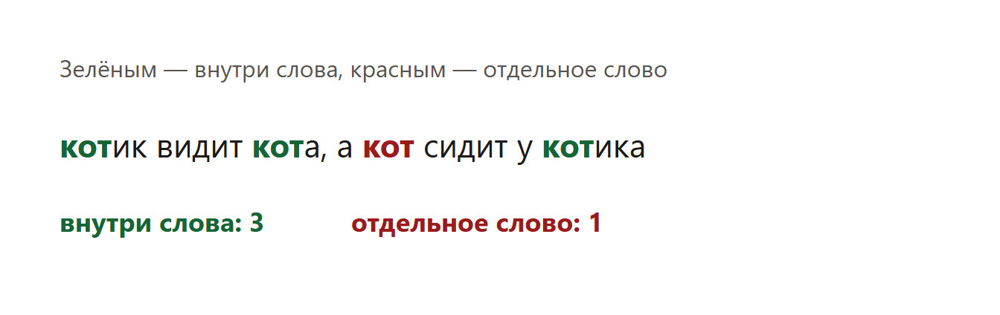
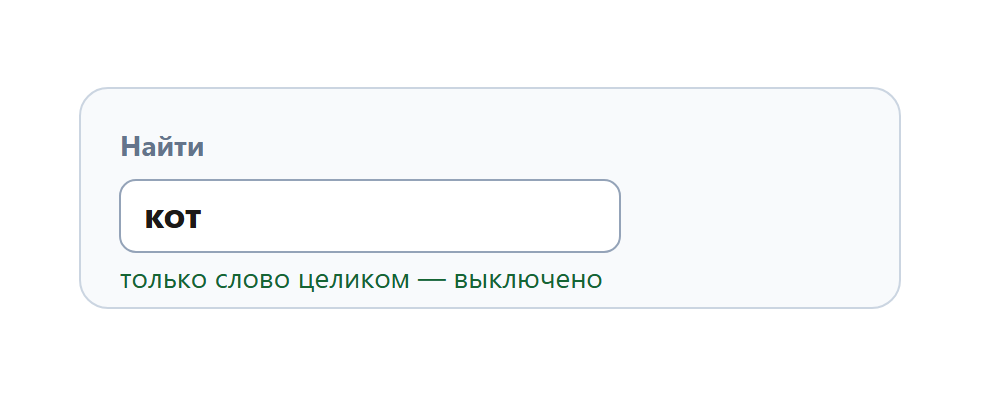

Дают текст и просят посчитать сочетание букв. Часто нужно сочетание внутри других слов, а отдельное слово не считают.
В 2026 году файл — это .odt. Его открывают в LibreOffice Writer. Поиск: Ctrl+F. Если нужны только несколько глав, их сначала копируют в новый документ и ищут уже там.
Текст: «котик видит кота, а кот сидит у котика».
Считаем сочетание «кот» и «Кот», но не отдельное слово «кот».

Ответ: 3.

Сочетание внутри слова и отдельное слово — разные вопросы. Сначала считают все вхождения букв подряд. Потом отдельно считают целые слова и вычитают. Регистр перед этим приводят к одному: нижнему.
На экзамене текст в файле .odt и его ищут через Ctrl+F. Программа ниже считает тот же учебный текст, чтобы было видно, откуда берутся 3, 1 и 4.
Каждый фрагмент запускается отдельно. В конце он печатает ответ. Комментарии на русском говорят, какая строка за что отвечает.
import re
text = "котик видит кота, а кот сидит у котика" # МЕНЯТЬ: текст
text = text.lower()
needle = "кот" # МЕНЯТЬ: сочетание
all_hits = len(re.findall(needle, text))
whole = len(re.findall(r"\b" + needle + r"\b", text))
print(all_hits - whole) # внутри других словЧто менять, если условие другое.
Программа печатает 3.
import re
text = "котик видит кота, а кот сидит у котика".lower()
needle = "кот"
print(len(re.findall(r"\b" + needle + r"\b", text)))Что менять, если условие другое.
Программа печатает 1.
text = "котик видит кота, а кот сидит у котика".lower()
needle = "кот" # МЕНЯТЬ
print(text.count(needle))Что менять, если условие другое.
Программа печатает 4.